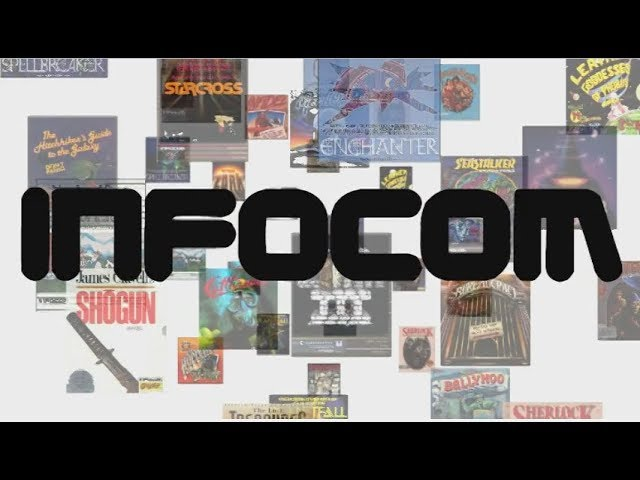

My goal with Quendor is creating a working emulator of the Z-Machine and an interpreter for zcode programs that will run on that machine. This means I will be building an interactive fiction interpreter. Depending on your age and/or nostalgia factor, you might better know "interactive fiction" by the name "text adventure."
Fun fact for nostalgia retrogamers: the term "interactive fiction" was likely first used by Robert Lafore.
The Z-Machine was originally created by a company called Infocom back in the late 1970s to play their adventure game Zork on microcomputers (which were the first "personal computers" with a side evolution into "home computers"). Eventually, this Z-Machine was used to play many text adventure games created by the same company throughout the 1980s.
Starting in the 1990s, after Infocom was acquired by Activision and effectively dissolved, hobbyists reverse-engineered the Z-Machine and games have been created for it ever since.
These "games" are often referred to as "stories," keeping with the focus on interactive fiction.